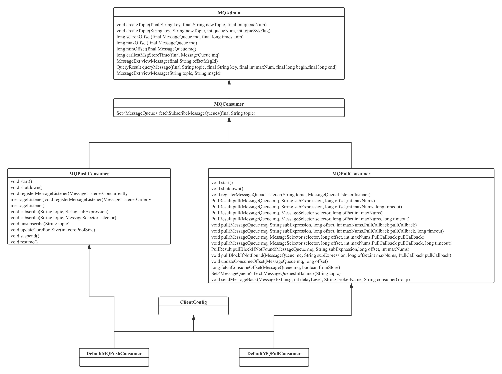
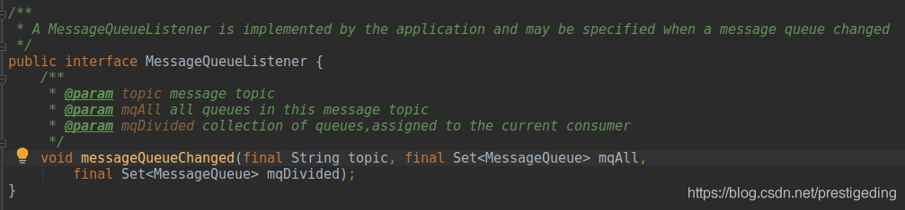

- 01 搭建学习环境准备篇.md.html
- 02 RocketMQ 核心概念扫盲篇.md.html
- 03 消息发送 API 详解与版本变迁说明.md.html
- 04 结合实际应用场景谈消息发送.md.html
- 05 消息发送核心参数与工作原理详解.md.html
- 06 消息发送常见错误与解决方案.md.html
- 07 事务消息使用及方案选型思考.md.html
- 08 消息消费 API 与版本变迁说明.md.html
- 09 DefaultMQPushConsumer 核心参数与工作原理.md.html
- 10 DefaultMQPushConsumer 使用示例与注意事项.md.html
- 11 DefaultLitePullConsumer 核心参数与实战.md.html
- 12 结合实际场景再聊 DefaultLitePullConsumer 的使用.md.html
- 13 结合实际场景顺序消费、消息过滤实战.md.html
- 14 消息消费积压问题排查实战.md.html
- 15 RocketMQ 常用命令实战.md.html
- 16 RocketMQ 集群性能摸高.md.html
- 17 RocketMQ 集群性能调优.md.html
- 18 RocketMQ 集群平滑运维.md.html
- 19 RocketMQ 集群监控（一）.md.html
- 20 RocketMQ 集群监控（二）.md.html
- 21 RocketMQ 集群告警.md.html
- 22 RocketMQ 集群踩坑记.md.html
- 23 消息轨迹、ACL 与多副本搭建.md.html
- 24 RocketMQ-Console 常用页面指标获取逻辑.md.html
- 25 RocketMQ Nameserver 背后的设计理念.md.html
- 26 Java 并发编程实战.md.html
- 27 从 RocketMQ 学基于文件的编程模式（一）.md.html
- 28 从 RocketMQ 学基于文件的编程模式（二）.md.html
- 29 从 RocketMQ 学 Netty 网络编程技巧.md.html
- 30 RocketMQ 学习方法之我见.md.html
08 消息消费 API 与版本变迁说明
从本篇开始我们将详细介绍 RockeMQ 的消息消费端的 API。
消息消费类图
RocketMQ 消费端的 API 如下图所示：

其核心类图如下所示。
MQAdmin
MQ 一些基本的管理功能，例如创建 Topic，这里稍微有点奇怪，消费端应该不需要继承该接口。该类在消息发送 API 章节已详细介绍，再次不再重复说明。
MQConsumer
MQ 消费者，这个接口定义得过于简单，如果该接口需要，可以将其子接口一些共同的方法提取到该接口中。
Set<MessageQueue> fetchSubscribeMessageQueues(final String topic)
获取分配该 Topic 所有的读队列。
MQPushConsumer
RocketMQ 支持推、拉两种模式，该接口是拉模式的接口定义。
void start()
启动消费者。
void shutdown()
关闭消费者。
void registerMessageQueueListener(String topic, MessageQueueListener listener)
注册消息队列变更回调时间，即消费端分配到的队列发生变化时触发的回调函数，其声明如下：

其参数说明如下：
String topic：主题。Set<MessageQueue> mqAll：该 Topic 所有的队列集合。Set<MessageQueue> mqDivided：分配给当前消费者的消费队列。
PullResult pull(MessageQueue mq, String subExpression, long offset,int maxNums, long timeout)
消息拉取，应用程序可以通过调用该方法从 RocketMQ 服务器拉取一篇消息，其参数含义说明如下：
MessageQueue mq：消息消费队列。String subExpression：消息过滤表达式，基于 Tag、SQL92 的过滤表达式。long offset：消息偏移量，消息在 ConsumeQueue 中的偏移量。int maxNums：一次消息拉取返回的最大消息条数。long timeout：本次拉取的超时时间。
PullResult pull(MessageQueue mq, MessageSelector selector, long offset,int maxNums, long timeout)
pull 重载方法，通过 MessageSelector 构建消息过滤对象，可以通过 MessageSelector 的 buildSql、buildTag 两个方法构建过滤表达式。
void pull(MessageQueue mq, String subExpression, long offset, int maxNums,PullCallback pullCallback)
异步拉取，调用其异步回调函数 PullCallback。
PullResult pullBlockIfNotFound(MessageQueue mq, String subExpression,long offset, int maxNums)
拉取消息，如果服务端没有新消息待拉取，一直阻塞等待，直到有消息返回，同样该方法有一个重载放假支持异步拉取。
void updateConsumeOffset(MessageQueue mq, long offset)
更新消息消费处理进度。
long fetchConsumeOffset(MessageQueue mq, boolean fromStore)
获取指定消息消费队列的消费进度。其中参数 fromStore 如果为 true，表示从消息消费进度存储文件中获取消费进度。
Set<MessageQueue> fetchMessageQueuesInBalance(String topic)
获取当前正在处理的消息消费队列（通过消息队列负载机制分配的队列）。
void sendMessageBack(MessageExt msg, int delayLevel, String brokerName, String consumerGroup)
消息消费失败后发送的 ACK。
MQPushConsumer
RocketMQ 推模式消费者接口。
void start()
启动消费者。
void shutdown()
关闭消费者。
void registerMessageListener(MessageListenerConcurrently messageListener)
注册并发消费模式监听器。
void registerMessageListener(MessageListenerOrderly messageListener)
注册顺序消费模式监听器。
void subscribe(String topic, String subExpression)
订阅主题。其参数说明如下：
String topic： 订阅的主题，RocketMQ 支持一个消费者订阅多个主题，操作方式是多次调用该方法。String subExpression：消息过滤表达式，例如传入订阅的 tag，SQL92 表达式。
void subscribe(String topic, MessageSelector selector)
订阅主题，重载方法，MessageSelector 提供了 buildSQL、buildTag 的订阅方式。
void unsubscribe(String topic)
取消订阅。
void suspend()
挂起消费。
void resume()
恢复继续消费。
DefaultMQPushConsumer
RocketMQ 消息推模式默认实现类。
DefaultMQPullConsumer
RocketMQ 消息拉取模式默认实现类。
在 RocketMQ 的内部实现原理中，其实现机制为 PULL 模式，而 PUSH 模式是一种伪推送，是对 PULL 模式的封装，PUSH 模式的实现原理如下图所示：
即 PUSH 模式就是对 PULL 模式的封装，每拉去一批消息后，提交到消费端的线程池（异步），然后马上向 Broker 拉取消息，即实现类似“推”的效果。
从 PULL 模式来看，消息的消费主要包含如下几个方面：
- 消息拉取，消息拉取模式通过 PULL 相关的 API 从 Broker 指定消息消费队列中拉取一批消息到消费消费客户端，多个消费者需要手动完成队列的分配。
- 消息消费端处理完消费，需要向 Broker 端报告消息处理队列，然后继续拉取下一批消息。
- 如果遇到消息消费失败，需要告知 Broker，该条消息消费失败，后续需要重试，通过手动调用 sendMessageBack 方法实现。
而 PUSH 模式就上述这些处理操作无需使用者考虑，只需告诉 RocketMQ 消费者在拉取消息后需要调用的事件监听器即可，消息消费进度的存储、消息消费的重试统一由 RocketMQ Client 来实现。
消息消费 API 简单使用示例
从上文基本可以得知，推模式 API 与拉模式 API 在使用层面的差别，可以简单理解为汽车领域的自动挡与手动挡。在实际业务类场景中，通常使用的是推送风格的 API，适合实时监控；但在大数据领域，通常是跑批处理即定时类任务，故大数据领域通常使用拉模式更多。
接下来编写几个示例代码对拉取、推送相关 API 进行一个使用方面的演示。
RocketMQ 拉模式核心 API 使用示例
使用场景：例如公司大数据团队需要对订单进行分析，为了提高计算效能，采取每 2 个小时调度一次，每批任务处理任务启动之前的所有消息。
首先我先给出一个基于 RocketMQ PULL 的 API 的编程示例代码，本示例接近生产实践，示例代码如下：
import org.apache.rocketmq.client.consumer.DefaultMQPullConsumer;
import org.apache.rocketmq.client.consumer.PullResult;
import org.apache.rocketmq.common.message.MessageExt;
import org.apache.rocketmq.common.message.MessageQueue;
import java.util.HashMap;
import java.util.List;
import java.util.Map;
import java.util.Set;
import java.util.concurrent.CountDownLatch;
import java.util.concurrent.TimeUnit;
public class PullConsumerTest {
public static void main(String[] args) throws Exception {
Semaphore semaphore = new Semaphore();
Thread t = new Thread(new Task(semaphore));
t.start();
CountDownLatch cdh = new CountDownLatch(1);
try {
//程序运行 120s 后介绍
cdh.await(120 * 1000, TimeUnit.MILLISECONDS);
} finally {
semaphore.running = false;
}
}
/**
* 消息拉取核心实现逻辑
*/
static class Task implements Runnable {
Semaphore s = new Semaphore();
public Task(Semaphore s ) {
this.s = s;
}
public void run() {
try {
DefaultMQPullConsumer consumer = new
DefaultMQPullConsumer("dw_pull_consumer");
consumer.setNamesrvAddr("127.0.01:9876");
consumer.start();
Map<MessageQueue, Long> offsetTable = new HashMap<MessageQueue, Long>();
Set<MessageQueue> msgQueueList = consumer.
fetchSubscribeMessageQueues("TOPIC_TEST"); // 获取该 Topic 的所有队列
if(msgQueueList != null && !msgQueueList.isEmpty()) {
boolean noFoundFlag = false;
while(this.s.running) {
if(noFoundFlag) { // 没有找到消息，暂停一下消费
Thread.sleep(1000);
}
for( MessageQueue q : msgQueueList ) {
PullResult pullResult = consumer.pull(q, "*", decivedPulloffset(offsetTable
, q, consumer) , 3000);
System.out.println("pullStatus:" +
pullResult.getPullStatus());
switch (pullResult.getPullStatus()) {
case FOUND:
doSomething(pullResult.getMsgFoundList());
break;
case NO_MATCHED_MSG:
break;
case NO_NEW_MSG:
case OFFSET_ILLEGAL:
noFoundFlag = true;
break;
default:
continue ;
}
//提交位点
consumer.updateConsumeOffset(q,
pullResult.getNextBeginOffset());
}
System.out.println("balacne queue is empty: " + consumer.
fetchMessageQueuesInBalance("TOPIC_TEST").isEmpty());
}
} else {
System.out.println("end,because queue is enmpty");
}
consumer.shutdown();
System.out.println("consumer shutdown");
} catch (Throwable e) {
e.printStackTrace();
}
}
}
/** 拉取到消息后具体的处理逻辑 */
private static void doSomething(List<MessageExt> msgs) {
System.out.println("本次拉取到的消息条数:" + msgs.size());
}
public static long decivedPulloffset(Map<MessageQueue, Long> offsetTable,
MessageQueue queue, DefaultMQPullConsumer consumer) throws Exception {
long offset = consumer.fetchConsumeOffset(queue, false);
if(offset < 0 ) {
offset = 0;
}
System.out.println("offset:" + offset);
return offset;
}
static class Semaphore {
public volatile boolean running = true;
}
}
关于上述代码，提供了优雅的线程拉取的方法，消息的拉取实现主要在任务 Task 的 run 方法中，主要的实现技巧如下：
- 首先根据 MQConsumer 的 fetchSubscribeMessageQueues 的方法获取 Topic 的所有队列信息。
- 然后遍历所有队列，依次通过 MQConsuemr 的 PULL 方法从 Broker 端拉取消息。
- 对拉取的消息进行消费处理。
- 通过调用 MQConsumer 的 updateConsumeOffset 方法更新位点，但需要注意的是这个方法并不是实时向 Broker 提交，而是客户端会启用以线程，默认每隔 5s 向 Broker 集中上报一次。
上面的示例演示的是一个消费组只有一个消费者，如果有多个消费组呢？这里就涉及到队列的重新分配，而每一个消费者是否只负责拉取分配的队列，是不是觉得这个直接使用 PULL 模式，是不是觉得有点复杂了。笔者也觉得是，接下来我们来看一下 PUSH 模式。
RocketMQ 推模式使用示例
在 RocketMQ 中绝大数场景中，通常会选择使用 PUSH 模式，因为 PUSH 模式是对 PULL 模式的封装，将消息的拉取、消息队列的自动负载、消息进度（位点）自动提交、消息消费重试都进行了封装，无需使用者关心，其示例代码如下：
public static void main(String[] args) throws InterruptedException, MQClientException {
DefaultMQPushConsumer consumer = new
DefaultMQPushConsumer("dw_test_consumer_6");
consumer.setNamesrvAddr("127.0.0.1:9876");
consumer.setConsumeFromWhere(ConsumeFromWhere.CONSUME_FROM_FIRST_OFFSET);
consumer.subscribe("TOPIC_TEST", "*");
consumer.setAllocateMessageQueueStrategy(new
AllocateMessageQueueAveragelyByCircle());
consumer.registerMessageListener(new MessageListenerConcurrently() {
@Override
public ConsumeConcurrentlyStatus consumeMessage(List<MessageExt> msgs,
ConsumeConcurrentlyContext context) {
try {
System.out.printf("%s Receive New Messages: %s %n",
Thread.currentThread().getName(), msgs);
return ConsumeConcurrentlyStatus.CONSUME_SUCCESS;
} catch (Throwable e) {
e.printStackTrace();
return ConsumeConcurrentlyStatus.RECONSUME_LATER;
}
}
});
consumer.start();
System.out.printf("Consumer Started.%n");
}
上面的代码是不是非常简单。在后续的文章我们会重点对 PUSH 模式消费者的核心属性即工作原理做详细的介绍。使用 DefaultMQPushConsumer 开发一个消费者，其代码基本覆盖如下几个方面：
- 首先 new DefaultMQPushConsumer 对象，并指定一个消费组名。
- 然后设置相关参数，例如 nameSrvAdd、消费失败重试次数、线程数等（可以设置哪些参数将在下篇文章中详细介绍）。
- 通过调用 setConsumeFromWhere 方法指定初次启动时从什么地方消费，默认是最新的消息开始消费。
- 通过调用 setAllocateMessageQueueStrategy 指定队列负载机制，默认平均分配。
- 通过调用 registerMessageListener 设置消息监听器，即消息处理逻辑，最终返回 CONSUME_SUCCESS（成功消费）或 RECONSUME_LATER（需要重试）。
温馨提示，关于消息消费的详细使用，将在后面的文章中进行详细介绍。
消息消费 API 版本演变说明
RocketMQ 在消费端的 API 相对来说还是比较稳定的，只是在 RocketMQ 4.6.0 版本引入了 DefaultLitePullConsumer，如果上述 PULL 示例代码引用的 Client 包版本为 4.6.0，细心的读者朋友们肯定会发现 DefaultMQPullConsumer 已过期，取代它的正是 DefaultLitePullConsumer。那这是什么原因呢？
我想只要大家使用过 DefaultMQPullConsumer 编写代码后，就会发现这个类的 API 太底层，使用者需要考虑的问题太多，例如队列负载、消费进度存储等等方面，可以毫不夸张地说，要用好 DefaultMQPullConsumer 还是不那么容易的。
RocketMQ 设计者也意识到了这样的问题，故引入了 DefaultLitePullConsumer，按照官方文档上的介绍，该类具备如下特性：
- 支持以订阅方式进行消息消费，支持消费队列自动再平衡。
- 支持手动分配队列的方式进行消息消费，此模式不支持队列自动再平衡。
- 提供 seek/commit 方法来重置、提交消费位点。
温馨提示：由于 DefaultLitePullConsumer 的内容比较多，我们将在后续单独一篇文章对其参数、方法、使用示例进行详细介绍，故本篇只是告知其引入的目的。
小结
本篇详细介绍了 RocketMQ PUSH、PULl 两种消息消费模式的核心 API，并对相关 API 进行了演示，后续会详细结合实际场景，并梳理核心参数，给出使用建议，后面引出了 RocketMQ 消费者一个重大的版本变更。